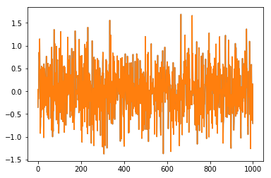
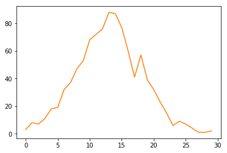
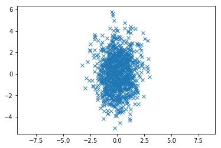

Playing With Distributions
Posted on May 31, 2017
by Govind Gopakumar
Please find the associated IPython file here
Trying out different distributions
In this notebook, we shall try and visualize what different distributions look like in 1D and 2D. Hopefully, it will give some intuition into what random variables are, and what correlations look like.
# Import the required modules.
import numpy as np
import sklearn as sk
import matplotlib.pyplot as plt# Define the mean and std.dev of the Gaussian Distribution
mu = 0
sigma = 0.5
# Draw 1000 samples from a normal distribution
samples = np.random.normal(mu, sigma, 1000)# Plot all the points we have drawn, it should be "thick" in the middle, with few outliers
plt.plot(samples)
plt.show()

Generated Image
# Computes a histogram of all the values we have obtained so far
hist, bin_edges = np.histogram(samples, bins=30)# Plot the histogram we have obtained. It should be like a bell curve
plt.plot(hist)
plt.show()

Generated Image
We have seen how the normal distribution resembles a sort of bell curve. With increasing samples, we will be able to see a closer fit to the “bell” shape. We’ll now see if we can replicate our classroom examples of drawing from a 2D Gaussian distribution
# Define the mean and covariance matrix
# We can choose a diagonal matrix, or any symmetric matrix of our choice.
# It must be symmetric (because covariance matrices are always symmetric!)
mean = [0, 0]
covariance = [[1,0], [0, 3]]
x, y = np.random.multivariate_normal(mean, covariance, 1000).T# We'll now plot this in a 2D plot. Hopefully we will get circular shapes
plt.plot(x, y, 'x')
plt.axis('equal')
plt.show()

Generated Image
Feel free to play around with the mean and covariance parameters, it should help you build some idea of how the Gaussian distributions behave.